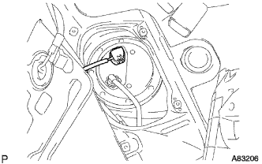

|  |
フューエルポンプASSY用のコネクターを切り離す。
エンジン始動
エンジンを始動する。
エンジンが自然に停止したあと、イグニッションスイッチをOFFにする。
- □ 参 考 □
- ダイアグコード“P0171/25”の燃料異常が検出される場合がある。
再度エンジンをクランキングし、始動しないことを確認する。
フューエルタンクキャップをはずし、フューエルタンク内の圧力を抜く。
バッテリのマイナスターミナルを取りはずす。
- ■ 注 意 ■
- DVDナビゲーションシステム装着車は
 参照
参照
フューエルポンプASSYのコネクターを取り付ける。